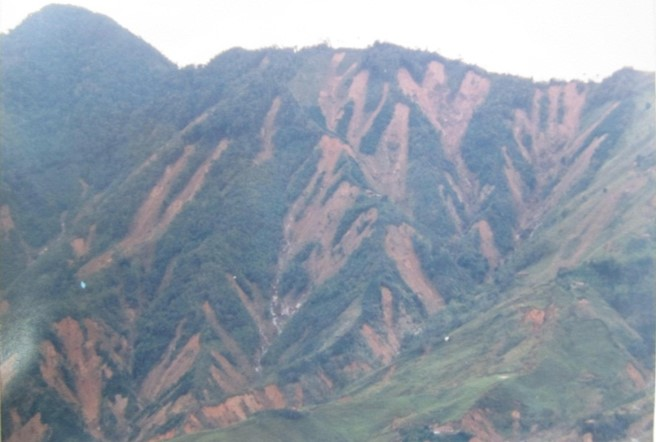
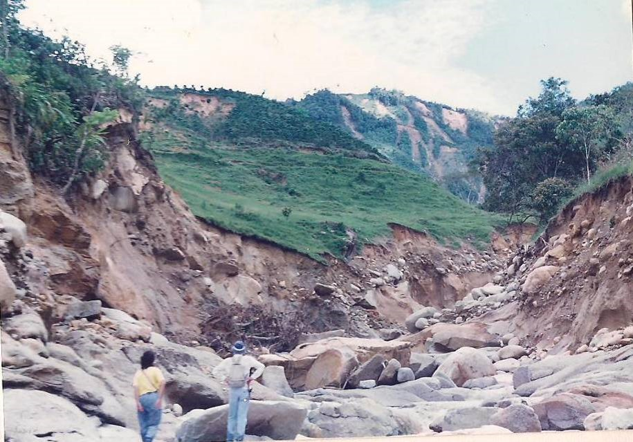
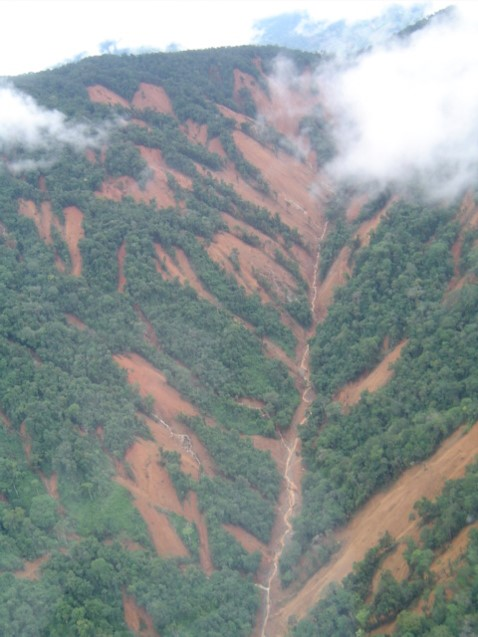

8:10:45
CRISIS AMBIENTAL EN COLOMBIA: ¿Variabilidad climática y/o efecto antrópico?
Movimientos en masa y flujos torrenciales
Prof. Edier Aristizábal

Introducción


San Carlos (1990)
San Carlos (1990)
Tarazá (2007)
Yalí (2020)

Anorí (2020)

Relación lluvia vs MenM

Cómo llueve en el Valle de Aburrá?
Precipitación anual

Precipitación mensual (ENSO)

Precipitación horaria - anual

Distribución espacial

Mecanismo

Amenaza bajo escenarios CC (Tr= 50 años)

Variables

Escenario de riesgo por torrencialidad


Reflexiones finales
- Cambio Climático:
- incremento en la frecuencia y magnitud de eventos intensos
- pocos estudios sobre la influencia en fenómenos de ladera
- mucha incertidumbre para efectos locales (MenM)
- Movimientos en masa:
- condiciones críticas deslizamientos superficiales en suelos arenosos (Batolito Antioqueño)
- el problema NO es lo que llueva, el problema es lo que se infiltra
- Avenidas torrenciales:
- el problema es lo que NO se infiltra
- eventos de gran poder destructivo
- Un número muy alto de poblaciones expuestas